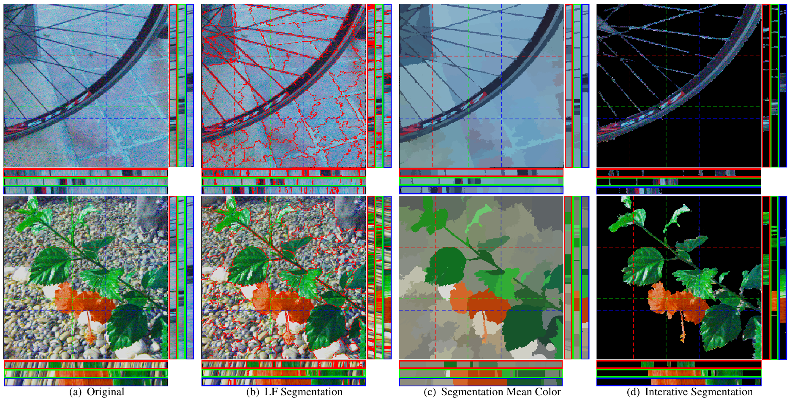
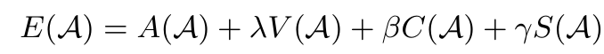
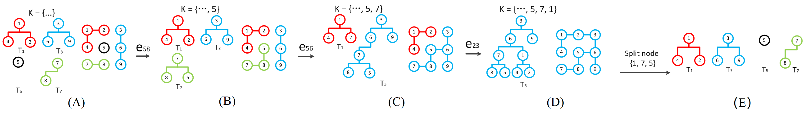
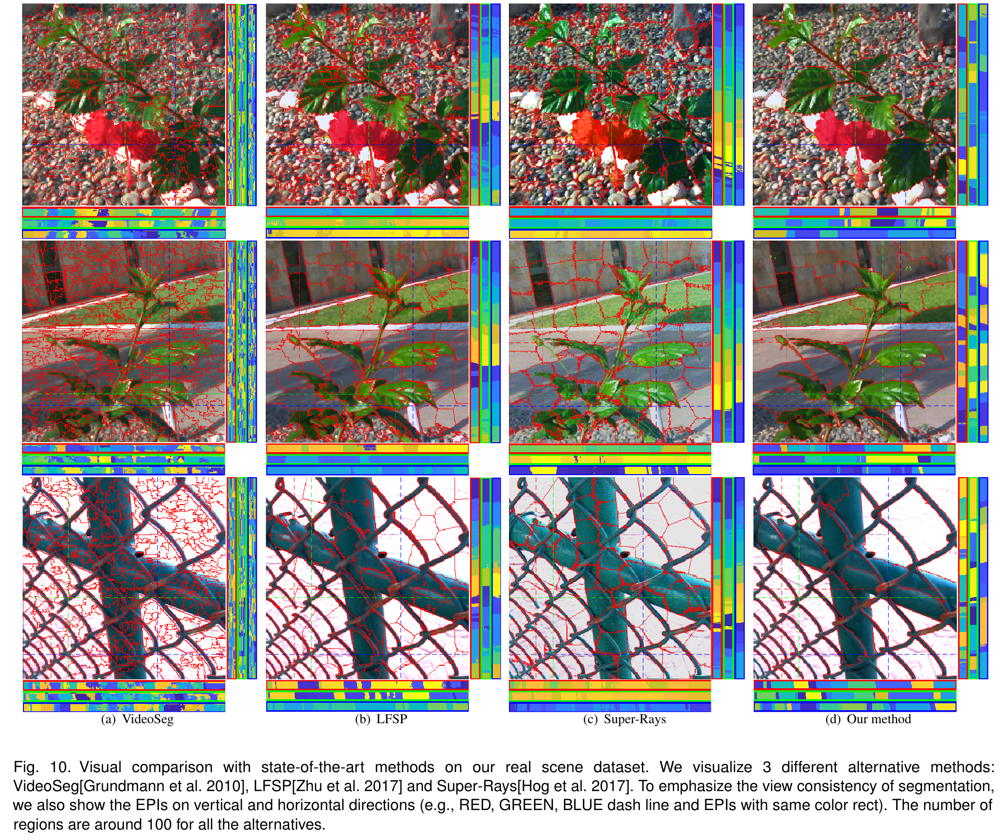
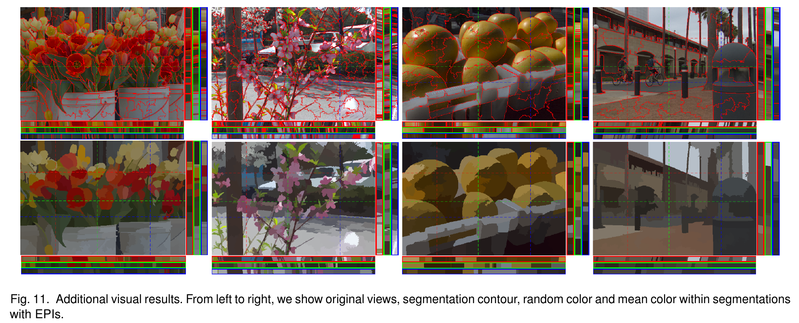
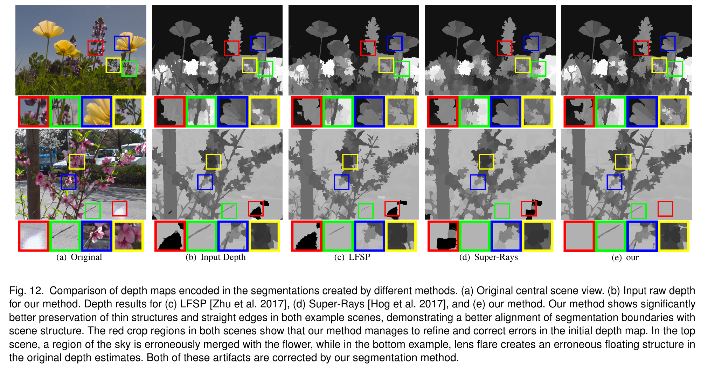

Our light field segmentation method facilities segmentation
of fine structures in light fields with complex occlusions and
difficult textures. Here we show from left to right: two source
light fields, the achieved segmentation, mean color regions, and
object selection (which requires additional user input). We also
show the EPIs for different horizontal and vertical slices.
Abstract
Image segmentation is an important first step of many image
processing, computer graphics, and computer vision pipelines. Unfortunately, it remains difficult to automatically and robustly segment cluttered scenes, or scenes in which multiple objects have similar color and texture. In these scenarios, light fields offer much richer cues that can be used efficiently to drastically improve the quality and robustness of segmentations.
In this paper we introduce a new light field segmentation method that respects texture appearance, depth consistency, as well as occlusion, and creates well-shaped segments that are robust under view point changes. Furthermore, our segmentation is hierarchical, i.e. with a single optimization, a whole hierarchy of segmentations with different numbers of regions is available. All this is achieved with a submodular objective function that allows for efficient greedy optimization. Finally, we introduce a new tree-array type data structure, i.e. a disjoint tree, to efficiently perform submodular optimization on very large graphs. This approach is of interest beyond our specific application of light field segmentation.
We demonstrate the efficacy of our method on a number of synthetic and real data sets, and show how the obtained segmentations can be used for applications in image processing and graphics.
Light Field Segmentation Model
Like 2D image segmentation methods, light field segmentation should produce clusters with consistent colors and textures. The clusters should be well shaped, and of similar size. In addition, however, we can define several additional desired properties that are specific to light field segmentation and can be used to obtain superior results:
Depth-Awareness: the method should be able to separate objects
with similar appearance according to scene depth.
Occlusion-Awareness: clusters should have sharp edges at
occlusion boundaries.
View Consistency: the clusters should be stable and consistent
under changes in view points.
Our segmentation method maximizes an objective function of the form

where A is an occlusion and depth aware appearance term, V encourages view consistency, C regularizes the spatial shape, and S encourages similarly sized clusters.
Large-scale Hierarchical Submodular Optimization
Performing standard submodular optimization on a light field graph will lead to a large-scale submodular optimization problem. Currently available light field data will generate graphs with up to 1e9 edges, while 2D images only have ~1e7 edges due to the more densely connected graph structure in 4D vs 2D. We develop several strategies to deal with large-scale optimization problems involving submodular functions. These include a disjoint tree as a hierarchical way of re-generating a specific number of regions, as well as a cache system to efficiently search, modify, merge large-scale trees. These innovations will be useful for other large-scale submodular optimization problems including for videos and volumes.

Experiments



Quantitative comparison results for our dataset.
Visual Comparison with State-of-the-arts
We visualize contour results for several popular segmentation method and 4D light field segmentation. We provide a extra visual comparison with state-of-the-art 2D segmenatation method and light field segmentation method, including SLIC, LFSP, Super-Ray. Our proposed method shows much better stability and segmentation performance when comparing with those privious methods.
Original
LFSP
Super-Ray
Our Proposed Method
Additional visual results on our dataset
We visualize our method on three ways: contour, random color for each region and mean color for segmentations.
@inproceedings{lirsiggraphasia2019,
title={Hierarchical and View-invariant Light Field Segmentation by Maximizing Entropy Rate on 4D Ray Graphs},
author={Li, Rui and Heidrich, Wolfgang},
booktitle={ACM Transactions on Graphics (Proc. SIGGRAPH Asia)},
year={2019},
publisher={ACM}
}